“mentally ill; insane. or very enthusiastic about someone or something.”
ITS OKAY TO GET MAD
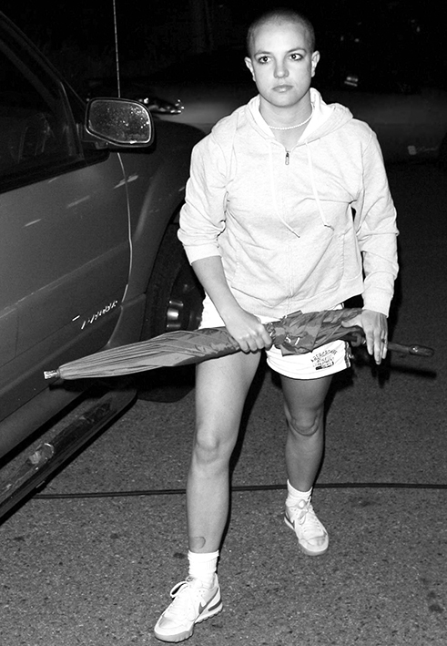
ITS OKAY TO GET MAD
Image: Britney Spears 2007
Britney Spears
American Singer - Songwriter
Britney Spears hit headlines for all the wrong reasons back in 2007 when she suffered a highly-public breakdown in the full glare of the world's spotlight.
The image of Britney, 37, emerging from a salon with a freshly-shaven head and attacking a paparazzo's car with an umbrella has become one of the most famous snaps of that decade.
However, the head-shaving was just the start of the year from hell for the pop princess, who endured a painful divorce, rehab and a terrifying hospitalisation
She spent years battling mental health troubles, and after her split from husband Kevin Federline, the father of her two sons, she headed to rehab in Antigua.
After checking into Eric Clapton's famous Crossroads Centre in February, 2007, Britney bailed just 24 hours later and flew back to Los Angeles.
Britney then walked into Esther's Hair Salon in Tarzana, an upmarket neighbourhood of LA, and asked the owner to shave her head because her hair extensions were too tight.
However, he refused the unusual request and begged Britney not to do it.
But the singer wasn't backing down and grabbed the clippers so she could shave off her long locks herself.
It was then that she was pictured coming out of the salon in front of a gaggle of photographers, armed with an umbrella which she used to belt a waiting SUV.
Images of a bald Britney dominated the news that week, and sparked fears the singer was in serious trouble as she struggled with her personal issues.
A week after the head-shaving, Britney was shipped off to rehab again - to the star-studded Promises centre in Malibu - but again she lasted less than a day.
Britney was eventually persuaded to return to the clinic and she stayed for a whole month.
In the meantime her divorce from Federline was going through, and she had lost custody of her sons Sean and Jayden, only being granted visitation rights.
Her record label began gearing up for the singer's first album in four years, Blackout, and booked her in for a performance at the MTV VMAs in September that year - just seven months after the head-shaving incident.
The performance was a huge disaster as Britney - with a blonde wig glued to her head - appeared to sleepwalk through the dance moves and mime half-heartedly along to the song.
Just four months after the VMAs disaster, the pop star hit rock bottom as she suffered a terrifying meltdown in January 2008.
She was seen being carted out of her house strapped to a gurney after reportedly popping prescription amphetamines and locking herself in the bathroom with youngest son Jayden as she refused to hand him back to Federline.
Emergency workers managed to get Britney out, and she was taken to Los Angeles' UCLA Medical Center, where she was placed on a 72-hour psychiatric hold.
The order - also known as a 5150 - is used to hold patients who are deemed a danger to themselves or others.
After her release, Britney suffered another incident weeks later as paramedics were once again called to her home and she was placed on another 5150 hold.
A week after the head-shaving, Britney was shipped off to rehab again - to the star-studded Promises centre in Malibu - but again she lasted less than a day.
Britney was eventually persuaded to return to the clinic and she stayed for a whole month.
In the meantime her divorce from Federline was going through, and she had lost custody of her sons Sean and Jayden, only being granted visitation rights.
Her record label began gearing up for the singer's first album in four years, Blackout, and booked her in for a performance at the MTV VMAs in September that year - just seven months after the head-shaving incident.
Noun: /nəʊz/
“the part projecting above the mouth on the face of a person, used for breathing and smelling.”
ITS OKAY TO HAVE A DIFFERENT NOSE
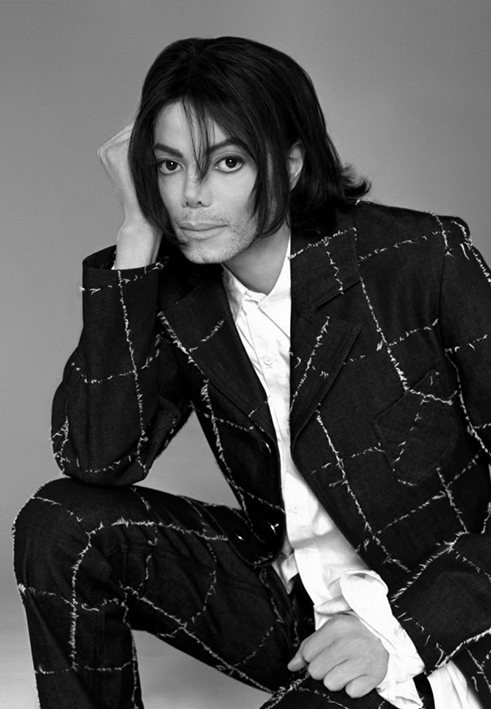
ITS OKAY TO HAVE A DIFFERENT NOSE
Image: Michael Jackson
Michael Jackson
American Singer - Songwriter
According to Matt Fiddes, MJ knew the fascination with him would stop if he wasn’t a ‘mystery’ in the public eye, forcing him to don surgical masks and put tape on his nose to seemingly rouse suspicion. Now choosing to defend his former employer – who died in 2009 – following the release of controversial documentary Leaving Neverland, Matt has revealed, perhaps not surprisingly, the superstar was just a normal guy at home. ‘He knew how to manipulate the media. He knew exactly how to get the front pages.
He used to have a meeting as soon as he got to a [city], Matt told Metro.co.uk. ‘90% of the time it worked, by putting a mask on his face, or sticky tape on his hands – or tape on his nose was a favourite one. He would say he wanted his life to be the greatest mystery on Earth. ‘It’s backfired on him now, though, that’s the sad thing.’
Matt claimed Michael – who was married to Lisa Marie Presley from 1994-1996 and later Debbie Rowe from 1996-1999 – ‘didn’t want the media to know if he was gay or straight because he knew the fascination would stop with the newspapers printing about him’. He also claimed Michael, who had, and still has, a loyal following, ‘didn’t want to upset any fans’ by shattering the mystical illusion around him.
Spending 10 years as the superstar’s right hand man, Matt continued: ‘He never used to live with makeup on. I remember one time we were watching TV at the [St Pancras] Renaissance Hotel in London and he wanted to go to [illusionist] Uri Geller’s house for a curry. He asked for the cars in an hour and he’s off getting ready, getting his hair done and he comes out in the whole image, the mask and fedora, the whole works.’ But to Matt, who now owns worldwide chain Matt Fiddes Martial Arts, back at home Michael was more about a ‘glass of wine, bottle of wine, he’d be swearing, he’d be a normal guy.’ He continued: ‘He was super intelligent, couldn’t sit down and watch a movie because he’d analyse every angle, very mistake the director made.’
According to Matt, the public thought they knew what Michael was like, but ‘unless you knew him’ you had no idea.
Claiming ‘this whole paedophile thing is complete nonsense’ Matt continued: ‘The guy had girlfriends and had a legitimate marriage to Lisa Marie, that was the way he lived his life.’ Of the claims made by James Safechuck and Wade Robson in the HBO documentary, that won an Emmy recently, Matt insisted it was ‘impossible’ for Michael to have done the acts he had been accused of – mostly because he was ‘hardly’ at the Neverland ranch, where the alleged incidents took place. ‘They say there were boys around, that was not the case at all. He made Neverland how it was so he could have it for the Make A Wish foundation; something he could give back on,’ the bodyguard and celebrity trainer said.
‘We had a running joke he was never there. He had to be in Los Angeles to conduct business, it’s about four hours’ drive from the mountains and he hated the drive, so he was very rarely there. He was there to make public appearances. He was much more comfortable at the Beverly Wiltshire in a suite.’ He continued: ‘If he was doing what he was doing to young kids he would never get any work done. He was already recording, performing and rehearsing, for him to be messing around with young kids would be impossible because of the security that was in place. It’s impossible.’
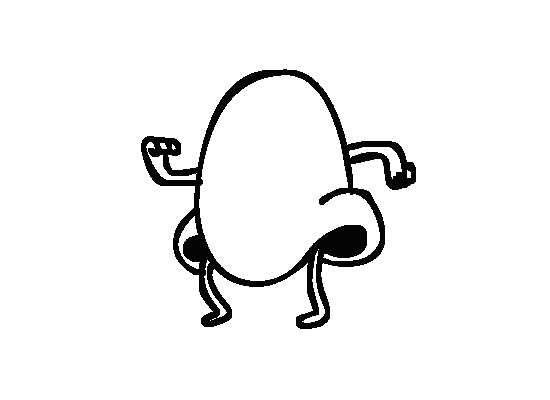
Noun: /bɔːld/
“having a scalp wholly or partly lacking hair. or not having any extra detail or explanation”
ITS OKAY TO HAVE NO HAIR
ITS OKAY TO HAVE NO HAIR
Image: Stanley Tucci Rake Magazine
Stanley Tucci
American Actor
Stanley Tucci is the best working American character actor, a designation I foist upon him with the utmost respect. He is recognized yet underappreciated; though his long nose, bald head, and rich voice are distinct, his roles are not. He remains the kind of actor who elicits in most viewers the question “Where do I know that guy from?”
Depending on your age, or Netflix algorithm, there might be dozens of potential answers, thanks to Tucci’s unfailing gameness to inhabit any filmic world: Tucci was the irascible lawyer won over by Mark Ruffalo's dogged journalist in Spotlight; the frighteningly well-coiffed host of the murderous reality TV spectacle in the Hunger Games series; and the wizard Merlin, inexplicably, in Transformers: The Last Knight. He also picked up an Oscar nomination — for Supporting Actor, of course — for 2009's The Lovely Bones, playing a serial killer.
Tucci's career has been long and varied enough to inspire a recent, uncharacteristically creative music video sketch on Saturday Night Live in which Pete Davidson, costumed in Lil Pump–esque braids and bling, announced his membership in the “Tucci Gang.”
I'm convinced that the largest number of people recognize Tucci from his role in The Devil Wears Prada, a movie that has enjoyed a powerful resilience in our cultural consciousness, even 12 years after its release. Seemingly anyone born between 1982 and 1995, of any gender and creed, can find something to like in the film, whether it's the clothes or Meryl or the glossy refraction of the contemporary American dream: suffering through a creative-class internship that might lead to career advancement.
Or, if you're like me, that something is Tucci, who is there in the periphery, playing the wise fashion-magazine elder to Anne Hathaway's ingenue. Tucci's character, Nigel, is the ultimate stifled artist, ever deferent to Meryl Streep's Miranda Priestly and her exacting vision. As the film goes on, he becomes a tragic figure, resigned to his subordinate place in the fashion hierarchy — a role he imbues with poise and composure, hard-edged and steely from years under Miranda's shadow, yet with humanity enough to extend a hand to Hathaway's Andy.
This is my favorite of Tucci's supporting roles, in part because it so neatly synthesizes the arc of his career. Nigel, the life-long second fiddle to another person's genius, mirrors Tucci, the life-long scene-stealer supporting other people's starring roles. He's so good as Nigel because he is Nigel — always in the corner, working diligently with the little bit of screentime he's been allotted.
But, in fact, that doesn’t tell the whole story. Because when Tucci's not appearing in other people's movies (or writing cookbooks, or owning restaurants — food being his other creative outlet) he's writing and directing his own. All that work in the trenches, all that time wearing fake chompers and blue hair for The Hunger Games, has been in service of his own art.
It's the John Cassavetes model of paying for your passion projects with paychecks from others' work, and there may be no greater contemporary practitioner than Tucci.
Tucci’s latest directorial effort (and the first he hasn’t starred in himself) is Final Portrait, a quiet movie about the painter Alberto Giacometti, starring Geoffrey Rush and Armie Hammer, that’s been in the works for no less than 13 years. But his best known and loved is probably Big Night, from 1996.
He’s one of the film industry’s most acclaimed and popular character actors, but just because he’s not a leading man doesn’t mean Stanley Tucci plays second fiddle. Guaranteed to improve every scene he’s in by at least 50 percent – or, in the case of the two Transformers films he’s done, 100 percent – the talented and versatile actor makes the most of his screen time.
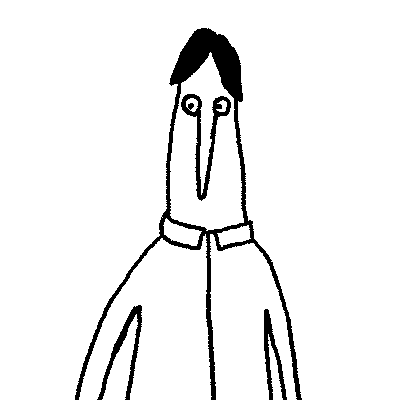
Noun: /ˈɡlɑːsɪz/
“a pair of lenses set in a frame resting on the nose and ears, used to correct or assist defective eyesight.”
ITS OKAY TO WEAR GLASSES
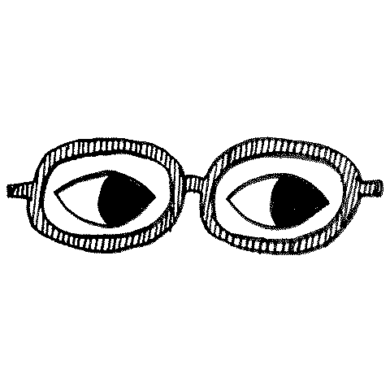
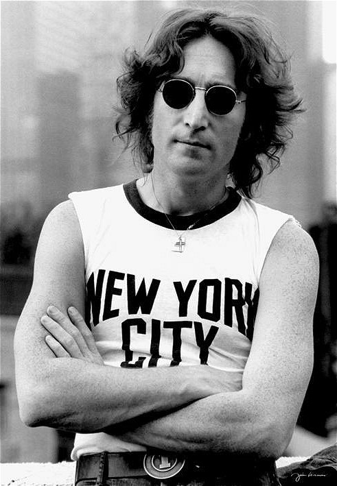
ITS OKAY TO WEAR GLASSES
Image: John Lennon in NYC
John Lennon
Singer - Songwriter
One of the key concepts in Lennon’s thought is that every individual represents a singularity of potential, each of whom is capable of influencing others, and the ripple effect can change society. This view lies at the heart of his song Instant Karma with its chorus of “We all shine on.” Tailoring the Hindu concept of karma to the here-and-now, he asserts that the cosmic laws of balance and retribution also apply in our current lives. If we approach the world as violent, self-gratifying or inconsiderate people, what reaction will we generate? If enough of us decide to be the same way, what kind of society will we have? We therefore need to be mindful of our actions and attitudes and their consequences.
In another of his key concepts, we also need to be mindful of our imagination and its potential. Lennon took note as sports and business figures began to use creative visualization to improve their real-life performance. Could we not use collective visualization to improve the world? What if, instead of everyone focusing their attention on the bugaboo of the day – the Communist menace, the slide toward an Orwellian future, the looming threat of a nuclear holocaust – they instead visualized a peaceful society, characterized by nonviolence and harmonious relations?
To that end he wrote Mind Games, to encourage listeners to become ‘mind guerrillas’, working independently but in concert to visualize and bring about a better society. He referred to the focus of the project as an ‘absolute elsewhere’ – an ideal world imagined so vividly that people would start altering their behavior, perhaps even subconsciously, to make it manifest.
Lennon’s most famous song had a similar aim. Imagine takes on three of the most divisive issues of humankind – religion, nationalism and possessiveness and gently invites us to look at them from a neutral perspective.
What if we accept that neither Heaven nor Hell exist, and that God is simply the name for a naturally-occurring background force in the universe? Without the prospect of Heaven or Hell we would have no expectation of reward or punishment after death. Would we suddenly descend to barbarism, looting, mayhem in the streets? Possibly. More likely we would simply focus better on our existence here and now, being keenly aware of our transience and the wisdom of trying to live a full life.
What if we stopped defining ourselves by imaginary lines running across the terrain? (Or at least began to think of demarcations of nations the way we think of postal districts?) What if, instead of considering ourselves patriots of a nation, we thought of ourselves first – like the great Cynic, Diogenes – as citizens of the world? Would we find it more difficult to distrust, berate and even mercilessly slaughter fellow citizens than we would foreigners?
What if we accomplished the hardest transformation of all and overcame our possessiveness? Notice that Lennon says imagining no Heaven is “easy if you try” and imagining no countries “isn’t hard to do,” but as for imagining no possessions, “I wonder if you can.” Wouldn’t much of the world’s misery vanish if we could simply begin to do what we encourage our children to do? To share?
The ideal world Lennon envisioned in 1971 was not something he expected to see in place the next year. Its purpose was to serve as an alternative destination to the one toward which our culture seemed to be rushing headlong in the heyday of Nixon, Brezhnev, Mao, the hot war in Southeast Asia and the Cold War everywhere else – i.e., Apocalypse 2000. His aural sketch represented what Richard Rorty calls “a fuzzy but inspiring focus imaginarius”; that is, “a handy bit of rhetoric” that might not hold up under analysis but nevertheless benefits society for having “kept the way open for political and cultural change.”
Imagine crystalizes Lennon’s philosophy. In it he reached hardest for the universal and consciously tried to communicate a vision that would inspire everyone everywhere – from a sales clerk in Tokyo to a mechanic in Warsaw to a florist in Prague to a street musician in Barcelona to a teacher in Havana.
itsoktobe was inspired by the childrens book titled "Its Ok To Be Different" by Todd Parr.
Designed and created by Mitchell Clement.
@mitchellclement

 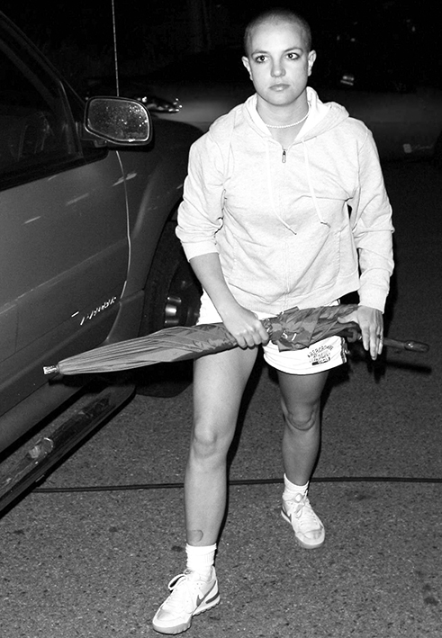
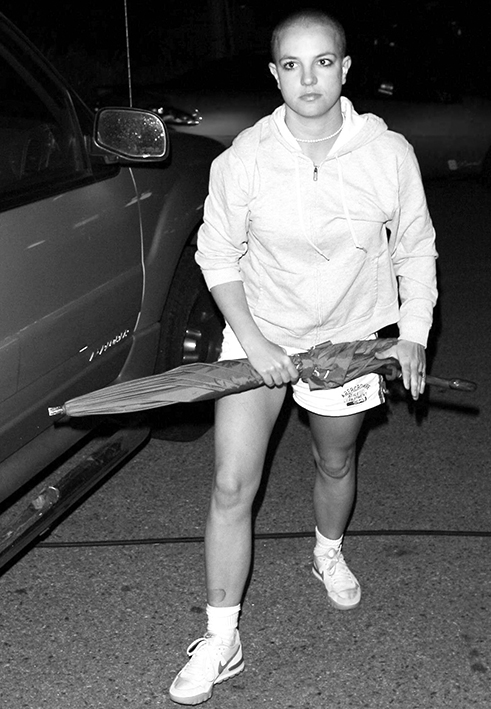
 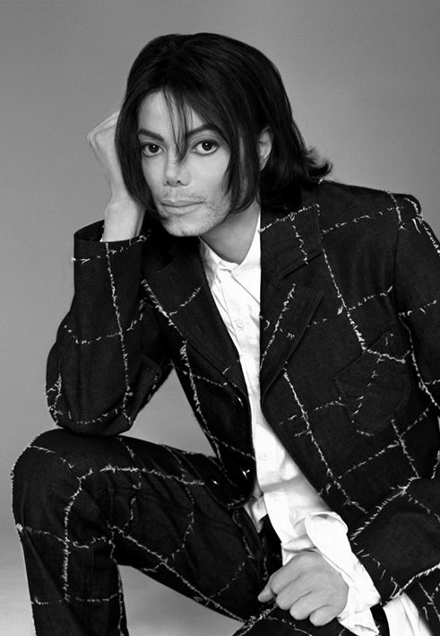
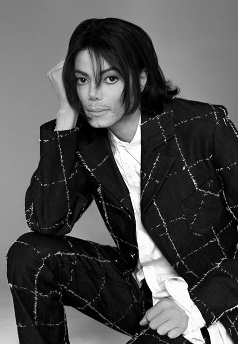

 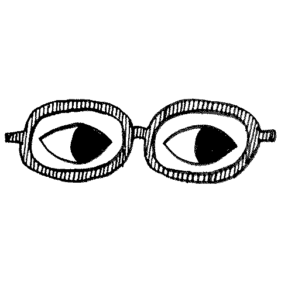
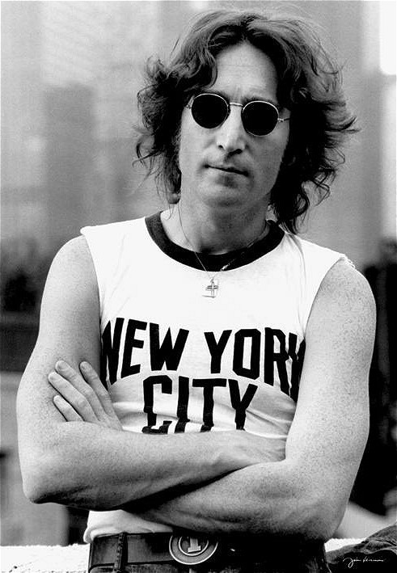
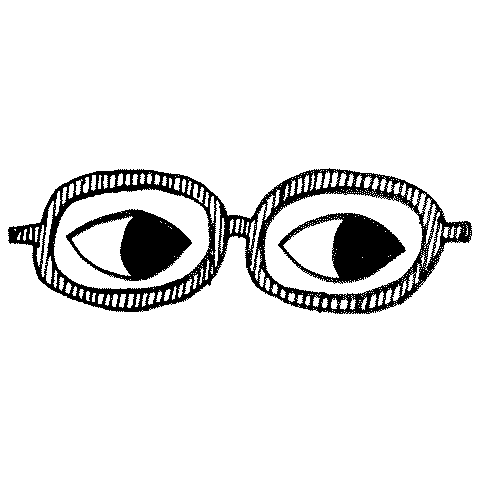
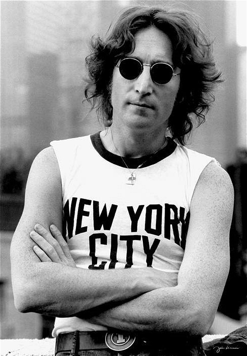